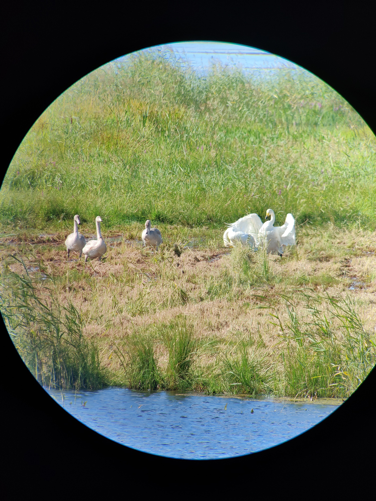

We started our windy outing with 3 Whooper Swans, presumably a pair and their young one, feeding in the wetland by stirring the waters with their body and dipping their long neck down. It seemed like the Eurasian Wigeons and the Gadwalls stayed close to take advantage of the disturbance. Along the path, Eurasian Tree Sparrows and Eurasian Greenfinches foraged in a plowed field. From the woods, we spotted a male Roe Deer adorned with gorgeous antlers. It spotted us too, and scrutinised us for a while before lying down in the grass, reassured. The forest itself seemed quiet, until we happened upon a pair of Eurasian Jays flying back and forth among tall evergreens. We approached with care, getting better views, and then a woodpecker appeared out of nowhere. It confused me for a while, until I managed to catch it in my binocularss: it was a stunning male Grey-headed Woodpecker, a species I only spot a few times every year. What a pleasant surprise! It showed very well for a few minutes, and then left us. The whole time, we heard Eurasian Bullfinches calling overhead, but when we could finally turn our attention to them, they were gone. Our excitement was not over, though, because a busy Eurasian Treecreeper flew past and climbed tree after tree, giving us great views again. The bay was quiet, but a smart Hen Harrier gliding in the distance kept us entertained. As we were about to close our outing, a commotion caught our attention: a Great Grey Shrike was chasing a small brown bird, possibly a sparrow. It missed, and started hunting from the fence, dropping to the field and them climbing back on the next post. What a great observation of a stunning bird, a winter specialty in Helsinki. Then it took to the air, and tried to catch a small bird again, on the wing. We didn't see how its hunt ended, but wow, incredible!
Vanhankaupunginlahti with Robyn and Esa
Where did summer go? The switched was turned, and in 3 days we lost 15 degrees to wake up to a frisk 4ºC morning. Fortunately, there was no cloud to prevent the sun from warming us up and letting us enjoy a great collection of ducks at close range, among them the elegant Northern Pintail. Three Roe Deers grazed in a field, and Common Ravens flew by. A large group of finches was moving back and forth between fallows and the bordering trees: Bramblings on migration stood out among the regular Common Chaffinches and Common Linnets. I spotted a Eurasian Sparrowhawk coming towards us at high speed, only a few meters above the ground. It went straight for the songbirds, sending them in panic in all directions. It even caught one, but it escaped, so the hawk went for an another one but couldn't fly fast enough to get it. In the end, we saw it fly away, talons empty. What an exciting moment! The woods held a few more surprises, like a Goldcrest and a Great Spotted Woodpecker that perched at the top of a spruce. By the bay, we appreciated the honking of two Whooper Swans chasing each other, while Barnacle Geese flew above in their hundreds. The Great Cormorant colony emptied before our eyes: one moment there were birds everywhere, the next the trees were bare, all the birds gone to sea for a day of fishing. A gorgeous Hen Harrier hunting above the fields and a tiny Eurasian Wren scurrying among the ferns were among the last birds of that cold sunny morning.
Greater Helsinki tour with Ben and Karolina
For this special 9-hour tour, my clients had rented a car so we could visit a variety of locations around Helsinki. A seaside peninsula was our starting point, and even though the resident Tawny Owls were not at home, we met a few quality birds throughout the morning. Among them, a shy Red-breasted Merganser hid its head most of the time, obscuring the features that made it stand out from its Common Merganser companions. A number of Eurasian Sparrowhawks, surely on migration, crossed the bay at high speed, one catching an ascending air current with a young White-tailed Eagle. We were walking back to the car when we got caught in a maelstorm of bird calls coming from all directions: here a Coal Tit, there a Eurasian Treecreeper, and then a loud Black Woodpecker that we sadly couldn't see. A stunning Willow Tit even came to greet us at eye level.
Our second location added waterfowls to our tally, and a massive adult White-tailed Eagle that hovered Osprey-style above a flock of Eurasian Coots in panic. What was it looking for? When never saw it dive.
We finished the day in agricultural land, looking for migrating raptors. We were not disappointed, for two Hen Harriers, a Common Buzzard and a Common Kestrel were joined by a fast Merlin that dashed past us twice, and a spectacular young Pallid Harrier that came very close to let us admire its orange belly. Amazing! Add to that several hundred Common Cranes and two Elks at sundown, and you'll have an intense but rewarding day out in beautiful Finland.
Laajalahti with Emma and Icaro
Our outing started with an Osprey flying high above with a huge fish in its talons. Not too bad! We spotted a family of Eurasian Blue Tits exploring a nearby row of birches, and a lone Willow Warbler near the top. The flooded mudflats seemed quiet at first, but life revealed itself as we observed: we found a Temminck's Stint on the edge and Wood Sandpipers, Ruffs and Common Snipes flew in from afar. A Great Egret fished in the shallows, affording us fantastic views. The reedbed songbirds proved elusive, and even though I spotted a few Common Reed Buntings in flight, they always landed deep into the grass. The young White Wagtails were more visible, and lively as ever, while a flock of Western Yellow Wagtails flew into the meadow only to be chased by a Eurasian Sparrowhawk. This beautiful raptor, a female unsuccessful in its hunt, then soared and passed right above us. That was a sight to behold! A secluded pool held Common Teals and a young Common Moorhen, while the woods had Spotted Flycatchers sallying forth from their perches. A Eurasian Treecreeper, usually a restless bird, uncharacteristically struck a pose on the side of a tree trunk, and then we heard and even saw cute Goldcrests that were not in the highest branches of a spruce! The Red-backed Shrikes delighted us with their antics, we saw a father deliver a big worm to its offspring. Finally, a young finch puzzled us, but we identified it as a Common Rosefinch, a striking sight at this time of year.
Vanhankaupunginlahti with Alan and Bev
The ducks tried to prevent us from entering the reserve! Tens of Mallards stood on the path, and only reluctantly moved away when we advanced. Cyclists had to dismount not to run over them. On the nearby pond, a couple of Northern Shovelers and a Eurasian Teal hid among the crowd, while a young Common Moorhen foraged in a ditch. Further on, we approached a large group of Barnacle, Canada and Greylag Geese, and spotted a relaxed Roe Deer at the back of it, while Common Linnets flew around us. In the sky, Common Ravens soared and dived. The woods were alive with the calls of songbirds, but many remained hidden at first. It's further that the magic happened: out of nowhere, we found ourselves surrounded, and didn't know where to focus our attention. Baby tits flitted through from branch to branch, including a very cute Coal Tit. Both European Pied and Spotted Flycatchers hawked under the canopy, and Common Blackbirds hopped on the forest floor. We heard it before we saw it, but a stunning male Great Spotted Woodpecker ended up showing very well as it pecked at a tree about 5 metres above ground. Just as we thought it couldn't get better, a tiny fluffy Eurasian Treecreeper buzzed into view and started its own impersonation of a woodpecker. Splendid! After that, the bay felt relatively quiet, but a White-tailed Eagle carrying a massive fish in the air brought quite some excitement, and so did the family of Whooper Swans that emerged from the reedbed just as we were about to leave the place.
Laajalahti with Raphaela and Jana
As we entered the reserve, young Great and Eurasian Blue Tits greeted us and followed us along the path, bouncing from birch to birch. An Osprey flew very close when it followed the edge of the bay then went and came back. It was looking for fish in the tranquil water, but we only saw it dive once, unsuccessfully. However, we saw it, and at least one more individual, flying away with a prey in its talons, so it must have been a fruitful morning for them. To our surprise, we spotted a White-tailed Eagle ankle deep in the water! It seemed to struggle to take off, so we were worried that it was caught in some underwater vegetation or garbage, but it slowly edged closer to the shore and disappeared into the reeds with what looked like a massive fish under its right foot. Had it caught one so heavy that it couldn't lift it from the water? If so, the glutton probably went into hiding to devour its prey. We did not see it after that, and herons and swans started to gradually reoccupy that end of the bay. Right in front of us, a small group of Ruffs waded among Northern Lapwings, Northern Shovelers and Eurasian Teals. The Red-backed Shrikes proved very active at the woods' edge, parents busy feeding their demanding chicks, and many Spotted Flycatchers hunted under the canopy. To conclude our outing, we had stunning close views of a small group of European Goldfinches feeding on thistle.

Laajalahti with Michel
The first observation of our morning was a father/chick pair of Red-backed Shrikes perched on birch snags in the swamp, the latter begging for food to be delivered in haste! With very high waters in the bay, most of the mudflats were submerged. Still, Northern Lapwings and Common Snipes found shelter on the edges, and the depth was not too great to prevent Ruffs from wetting their feet. Wood Sandpipers flushed with great fanfare before landing again next to the many Common Teals and the occasional Northern Shoveler. I'm glad I had a careful look at the wagtails, because among the many White Wagtail youglings hid a superb Citrine Wagtail, either a female or a male in non-breeding attire: mostly grey, it wore a subtle but noticeable yellow wash on the face and breast. Quite the stunner! The elevated platform has great views into nearby bushes, where we found a common but always pretty Eurasian Blue Tit, an energetic Willow Warbler and an obliging Lesser Whitethroat. Above the bay, the ballet of Common Swifts was a sight to behold. They were joined by a few Barn Swallows as they hunted for insects. The local Great Egrets made a appearance, they flew around from the other side and probably returned, because we found them there after walking though the forest. In the distance, a pair of Great Crested Grebes swam with their three chicks.
Laajalahti with Alice and Andi
We were greeted on the path by a few baby European Robins chasing each other. They had been hanging out there for some weeks, between two pieces of reedbed. At the tower, the number of water birds was nothing short of astonishing, with waders, gulls, terns, ducks, songbirds in sight everywhere. A large group of Barnacle Geese flew over with the usual cackle and landed on the water in front of us. Initially tightly packed, they gradually dispersed over the bay. Several Caspian Terns, including a few young birds, delighted us with their antics, especially when they starting flying around and hunting fish. We had some quality waders too, with 3 Temminck's Stints, a lone Dunlin and Common Greenshanks perched on their tall legs, but the highlight came in the form of two Spotted Redshanks, a young one and an adult still sporting a near-perfect breeding plumage! White Wagtails were numerous on the mudflats, but a Western Yellow Wagtail occasionally mingled with them. In the woods, a Coal Tit was bouncing around alder trees, quite an unusual habitat for it but it quickly travelled back to its favourite conifers. We were quietly scanning the bushes for Willow Warblers when I sensed activity behind me. I slowly turned and discovered an adorable Long-tailed Tit perched just two meters away! It stayed there for some minutes, affording us unparalleled views before moving on with its family. An Osprey flying by with a big fish in its talons was another great encounter.
Vanhankaupunginlahti with Oli, Niina, Matt and Karolina
It's not often I guide complete beginners, but playing the Wingspan boardgame made them want to try birdwatching. I find it so cool when this happens! I believe that the more people get interested in nature, the better our shared future on this planet will be. We started with a tough one to spot, a Roe Deer running through a field of wheat, with only the ears sticking out, and not all the time. Luckily, we had easier ones later, including Common Ravens that charmed us with their varied vocalizations, and a tiny young Coal Tit seeking food among the lower branches of a big pine. A male Common Blackbird, the bill full of insects and worms, was clearly collecting food for his babies. For once, we had stunning views of two Great Egrets that hunted in the shallows and flew across the bay several times. The reedbed had another rare treat for us, a group of Bearded Reedling. Sadly, they never stayed put very long, so it was tough to observe them well, but their contact calls echoed in the quiet morning air. Young Red-backed Shrikes hunted from fence posts, and a lone Eurasian Curlew flew above them, back and forth before disappearing in the distance. A set of ponds let us observe a family of Eurasian Wigeons and some Wood Sandpipers, while a male White Wagtail fed its young ones near the path. A small murmuration of Common Starlings seemed distressed, and indeed with the binoculars we could spot a Eurasian Hobby chasing them! I don't think it caught any, though.
Vanhankaupunginlahti with Julia, Eric, Nina and Graham
After the storm comes the sun, and fortunately we had agreed on a not-too-early start! The ditches were full of water, the fields partly flooded, and it seemed that inspired the local Mallards to venture away from their pond for a few beakfuls of wheat! Nearby, two Common Moorhens were apparently building a nest, though that seemed very late in season. As we observed a beautiful European Robin perched near the path, a white moving dot caught my eye in the background: it was a Eurasian Treecreeper climbing up the trunk of a big spruce. It's funny how any day with a treecreeper immediately becomes a better day! My clients were big fans of the Wingspan boardgame, and I am too, so we had fun finding some of the local birds that are in the game. One that isn't is the Whooper Swan, but the national bird of Finland delighted us nonetheless with its graceful attitude. As always, the corvids looked spiffy, and having all three species in the same tree let us appreciate the similarities and differences between the Common Raven, the Hooded Crow and the Northern Jackdaw. Soaked by the rain, a young Western Yellow Wagtail looked very scruffy as it called to its parents. We heard several Great Spotted Woodpeckers, but saw none. Instead, we admired a Yellowhammer as it took advantage of a puddle on the path to take a bath. Both are in Wingspan, by the way ;-)
Laajalahti with Sylvain and Céline
On another warm and sunny morning, we were greeted by singing Sedge Warblers as we walked along the reedbed, and by a pair of Eurasian Blue Tits with their loud and hungry babies in tow. As is the case with Great Tits, which we saw later, young ones of this species look much like adults, but bleached out... and the yellow has spread onto their face. Like all baby birds, they look quite cute. The mudflats hosted a bunch of waders again. No sign of a Broad-billed Sandpiper this time, but a kind gentleman pointed out to us the two Black-tailed Godwits that placidly foraged at the back of the bay. Young White Wagtails whizzed past all the time as they explored the shoreline. Right below us, in the reeds, we had unusually good views of Eurasian Reed Warblers. They might have been naive young birds, showing as they did. The trees nearby provided perches for a voluble family of Barn Swallows, and hunting grounds for a smart Lesser Whitethroat. As we left the area, we heard an unusual warble that turned into Sedge Warbler talk before dying out. Either it was a Sedge Warbler doing funky things, or a Marsh Warbler that imitated one! We waited a little, but the bird remained silent afterwards so we went into the woods. There, we met a trustful young Great Spotted Woodpecker at eye level, and a restless Lesser Spotted Woodpecker much further up, in a pine tree.
Laajalahti with Marine and Mélissa
Having French guests allowed me to practiced my underused mother tongue, and it was fun, though I sometimes had trouble remembering bird names. The amount of waders on the mudflats was astonishing, with Wood Sandpipers, Common Snipes and Ruffs being the most numerous ones. Among them, gems such as Green Sandpiper, Little Ringed Plover and the elusive Broad-billed Sandpiper delighted us. Young White Wagtails were everywhere, and so were families of Eurasian Blue Tits with several chicks in tow. We had good numbers of Caspian Terns too, and a Common Tern landed right in front of us to swallow the big fish it had caught. Meanwhile, a nursery of young Common Gulls erupted in a riot when an adult showed up with food! Things were quieter in the forest, but a singing Garden Warbler caught our attention, though we didn't see it. A pair of Spotted Flycatchers fed their babies in a clearing, while a Great Spotted Woodpecker hammered pinecones with its strong bill to extract the seeds. A male Common Blackbird was collecting small black berries for its young one that was sitting on the edge of the same tree. It could have caught them itself had it bent a little, but isn't it much more fun to wait for Dad to do the work?
Vanhankaupunginlahti with John
Summer had finally come to Helsinki, which meant birding in shorts and t-shirt! I greatly enjoyed that, especially since mosquitoes were not out in great numbers. On a field, we spotted a female Roe Deer, while a Sedge Warbler sang its heart out from a row of reeds. An odd find was a Corn Bunting, a rare bird in Finland and one I had never seen here. It's a small bird, but when it foraged next to House Sparrows and Common Linnets, it looked like a giant! Very interesting. In the woods, the songs of Willows Warblers and Common Ravens followed us. The bay was full of life as always, with waders on post-breeding migration already prowling the shores and a Great Egret hanging around with diminutive Eurasian Teals in eclipse plumage. We saw a Red Fox being harassed by Hooded Crows as it explored the meadow. A Common Rosefinch showed up, but it was a female-type bird not sporting the crimson plumage so typical of males. Fortunately, the Common Snipes didn't disappoint, with one perched on the nesting box and another one taking flight when a Western Marsh Harrier approached its hiding place. Right under the bird tower, a pair of Barn Swallows had built a nest, its location betrayed by their ceaseless coming and going as they fed their chicks.
Vanhankaupunginlahti with Malcolm
Under moody skies, we started our tour with a stunning Northern Shoveler in eclipse plumage, sitting on a rock and preening. Crossing the adjacent fields, we enjoyed the song of a Sedge Warbler, the antics of 3 Brown Hares and the racket of a congregation of Common Ravens, the latter following us as we explored the woods. A Blackcap sang and a Great Spotted Woodpecker called, but none of them showed, they remained hidden in the fresh foliage. On the other side, a male Roe Deer looked at us from the reedbed before disappearing into it. Common Terns flew by, gulls of various species bathed and Stock Doves cooed from the power line. No White-tailed Eagle that day, but a stunning Osprey delighted us all the same! Common Rosefinches put up a show as expected, providing a lifer species to my client, while the neighbour Yellowhammer delivered its buzzing song from the top of a birch. Baby Great Tits harassed their parents for some food, while baby Gadwalls managed on their own just fine, thank you very much. A few waders explored the muddy shoreline, among them a Green Sandpiper and a Common Greenshank. Nearby, a pair of Whooper Swans watched over their grey,fluffy and sleepy offsprings. The local Common Snipe flew high up and sometimes even displayed, though it was so muted and rare that it was hard to hear well. It was probably late in the season for that show. What was in season was the caravan of baby birds that followed us through the end of the trip, a real treat: Common Whitethroats, Common Goldeneyes, Northern Lapwings...
Vanhankaupunginlahti with Greg and George
After being away for a month on a personal trip, it was a delight to be back in Helsinki with 10-year-old George and his father. It rained, but that didn't prevent us from spotting some top-quality birds. We started with a bunch of common birds, such as Common Raven and White Wagtail showing very well. A stunning Eurasian Skylark stood on the edge of the path, at really short range: once I had my scope on it, we got amazing views of that subtle beauty. A Western Yellow Wagtail also posed pretty close, I wonder if it had a nest or young ones nearby. In the woods, birds were loud, but the amount of leaves made it difficult to see them, except for the Common Blackbirds that kept crossing the path, chasing each other or looking for food. A tame Song Thrush pulled a huge worm from the damp ground right in front of us! Other songsters put up a show at the forest edge, with Common Rosefinches flying everywhere and Common Reed Buntings giving their hesitant song from the top of their favourite perch, reeds. A Common Snipe preened on top of a exposed nest box, in unusual fashion, and two mother Gadwalls kept a watchful eyes on their brood. On the way back, a flooded field yielded Wood Sandpipers and male Ruffs still in breeding plumage, while baby Common Whitethroats huddled in a bush. It rained, but it was still fun!
Laajalahti with Cheryl
At the trailhead, we met a Thrush Nightingale singing very loudly and visibly at eye level. Spectacular! From the bird tower, we saw an amazing variety of both water birds and songbirds: Temminck's Stint, Sedge Warbler, Eurasian Teal, Whooper Swan, Common Ringed Plover, Whinchat... a confiding Eurasian Reed Warbler showed very nicely at close range, and a stunning male Citrine Wagtail perched on a fence, far in the distance. The song of a Common Rosefinch drew us away, and we also heard a Water Rail in the rushes. We walked to the other side of the bay, and were rewarded with nicer view of both Citrine and Western Yellow Wagtail. The woods were full of life, from the quiet Stock Dove to the turbulent Lesser Whitethroat, and so were the edges, where we found Yellowhammer, Common Whitethroat and Garden Warbler. A White-tailed Eagle glided in front of us to land on a rocky island, surrounded by gulls and cormorants, while Arctic Terns quarrelled. In the woods, we looked for Wood Warblers: we heard a few without seeing them, but a gorgeous Eurasian Bullfinch showed nicely. I rarely see this species in summer, so it felt like a wonderful parting gift.
Vanhankaupunginlahti with Tauno and Luke
6-year-old Tauno got a birding trip as a birthday present, so I took him and his dad on a morning adventure. We first observed Northern Lapwings nesting on the fields. In the woods, a Song Thrush and a Common Chaffinch singing next to each other looked wonderful, and so did the Willow Warbler we found a little further. The bay was full of ducks and gulls, and even a Caspian Tern came to greet us with its croaking call. Common Whitethroats sang from the thickets, and a Yellowhammer was in its usual spot, at the forest's edge. While we waited for the White-tailed Eagles to show up (they didn't), three Temminck's Stints landed in the mud and started to forage there. A Stock Dove cooed from the power line. Our next spot was wonderful: a mother Common Goldeneye looked after four chicks, while a Common Snipe displayed high in the sky. The Greylag Geese also had chicks, and while I enjoyed the songs of reed buntings and yellow wagtails, I recognised one I hadn't heard in a while: "Pleased to meet you", the Common Rosefinches were back! Not only was that one singing loud and clear, but it did so perched from a well exposed willow. We had stellar views of that long-distance migrant that spends winter in the Indian Subcontinent. To round things up, a Lesser Spotted Flycatcher drumming in the birch grove and a choir of Eurasian Skylarks weren't too bad either.
Laajalahti and Suomenoja with Alan and Janet
As we walked towards the first bird tower, a lovely Willow Warbler was singing from a treetop. We heard a lot more of them that day, but never saw one so well. From the reedbed, Sedge Warblers launched bell-shaped song flights, giving us spectacular, if brief, views of them. It was nice to catch up with a few local waders as they worked the mudflats right in front of us: Little Ringed Plover, Common Sandpiper, Common Redshank... Ducks were present too, with Eurasian Teal and Northern Shoveler swimming close by. In the forest, we witnessed what looked like a territorial quarrel between a Eurasian Blue Tit and a European Pied Flycatcher. Were they fighting for one nesting cavity? They gave us splendid views at short range. A Common Crane foraging on its own surprised us, and two Ospreys delighted us with their aerial antics above the bay. Back in the woods, we finally found the first Wood Warbler of the year! After a short transfer by tram and metro, we completed our collection of waterfowls with a pair of Garganeys, Common Pochards and the ever-superb Horned Grebe. As we left, we had absolutely amazing views of two separate Thrush Nightingales. They usually sing deep in the bushes, but these ones were up in trees, singing almost in the open. A real treat.
Vanhankaupunginlahti with Katrina, John, Ann and Arthur
It's under the sun that we started our evening of exploration. Near the rapids, we found a Common Tern on the hunt. It caught a fish, but as soon as it surfaced, Common and European Herring Gulls launched in pursuit, and the tern had to surrender its prey to the larger gull. In the forest, many songs echoed, among them a European Pied Flycatcher and a loud Thrush Nightingale that sadly remained out of sight. Common Blackbirds were numerous and visible though. From a bird tower, we saw the first swallows of the year, a mixed flock of Barn Swallows and Common House Martins flying above the nearby pond. A stunning Western Marsh Harrier glided above the reedbed. As we crossed to the island, we could hear the scratchy song of the Sedge Warbler coming from several birds, but they stayed well hidden, unlike the Common Reed Buntings that delivered their trills from exposed reed stalks. The skies turned moody, and we thought we'd be rained on, but we did stay dry! A flooded field held Wood Sandpipers and a Ruff, and a magnificent Western Yellow Wagtail that came to perch on the fence, mere metres from us. What a bird!
Vanhankaupunginlahti with Jake, Patty and Cheryl
That clear morning was perfect for the group of photographer I guided. We were on site at sunrise, just in time to see a Red Fox roaming on the open field. Was it the same individual as last time? Once again, it was surrounded by Hooded Crows and Common Ravens, and they all looked stunning in the golden glow of dawn. My clients wished to photograph Eurasian Blue Tits, so we set off into the arboretum to look for the common but restless little birds... and had a great moment with several of them! They perched on the side of trees, not very high up, looking for food in nooks and crannies, moss and lichen. When the blue tits disappeared, we had Great and Coal Tits but also Common Chaffinches and Common Blackbirds to entertain us. Further on, little ponds gave us nice views of Common Goldeneyes and Eurasian Teals. The main soundtrack was managed by the Northern Lapwings that chased crows and ravens when they crossed their territories, and Eurasian Skylarks flying high in the sky in typical fashion. A gorgeous Common Reed Bunting male sang from the top of reeds, in front of a dark background that was sure to yield nice images. Given the distance, it was a bit difficult to spot with a camera, but I helped my clients to locate it as its perch swayed in the wind, and all managed to capture the busy little bird.
Vanhankaupunginlahti with Susan, Joanna and David
When I woke up, I saw a storm of snow and hail outside… but it was over by the time I reached our meeting point, fortunately, and the sun was even shining! Our first observation was an orange spot in the field ahead: a Red Fox, lounging after a good meal, surrounded by Hooded Crows and a Common Raven. Behind us, Eurasian Greenfinches and Common Linnets sang from the top of the trees while a pair of Whooper Swans foraged on the still-half-frozen pond. Later, we entered the woods and were greeted by the repetitive song of two Yellowhammers, another sure-fire sign of spring. Great and Eurasian Blue Tits jumped from branch to branch, and we even caught a glimpse of a Coal Tit further up, in a conifer as always. On the fields, returning Canada Geese had gathered. I noticed two smaller birds among them, they turned out to be the first Barnacle Geese of the year! The bay was largely free of ice and held a small group of stunning Smews, alongside Goosanders and Common Goldeneyes. We devoted the end of the outing to the local feeders, where a galore of finches awaited us. We had been hearing Eurasian Bullfinches for a while, without seeing them, but we finally connected there, resplendent males and subtle females showing very well. We compared the Eurasian Greenfinch to the similarly-coloured Eurasian siskin, were wowed by the European Goldfinch, marvelled at the orange Brambling and sought an elusive Common Chaffinch. It was a splendid morning of early spring birding!
Vanhankaupunginlahti with Russell
Clear winter skies often mean cold days, but the two go quite well together! We ventured by -10ºC to look for birds, and while the fields were quiet apart from overflying Hooded Crows, the woods felt quite alive with the contact calls of tits, three species putting on a beautiful show for us: Great, Eurasian Blue and Coal Tits. After meeting a Great Spotted Woodpecker that was busy opening a pinecone on its favourite tree, we encountered many chatty Eurasian Bullfinches. In addition to the characteristic trumpetting call, they delighted us with their flutty song. They were everywhere, sometimes even at eye level as they ate tree buds! Higher up, Eurasian Siskins fed on alder fruits. The frozen bay was quiet too, but a White-tailed Eagle made an impression by flying across, and then back after it encountered too many crows and Common Ravens intent on chasing it. We picked up a few more species at the bird feeder: Common Chaffinch, Brambling, Yellowhammer... After a while, our toes started to freeze so we walked away, finding yet more bullfinches and many Common Blackbirds. We were looking at a distant raptor perched in the forest (maybe a young Eurasian Goshawk) when an unmistakable called sounded above: a female Black Woodpecker flew into a nearby tree and started pecking at the bark. We were on a small hill, so we had that magnificent bird almost at eye level, which felt very special. A stunning ending for our trip!
Vanhankaupunginlahti with Vika and Ivan
On a cold and windy winter day, we were delighted to find two male Goosanders fishing at the bottom of the rapids. Conveniently, they came to rest and preen on ice soon after, so it was easy to admire them with the scope. In the woods, a feeder attracted tits and blackbirds, while chatty Fieldfares flew high above. Some Common Starlings foraged on the ground - not a common species in Helsinki in winter! All those birds suddenly went silent when a Eurasian Sparrowhawk glided past, but the raptor was not interested and quickly disappeared from view. The reedbed was quiet but for the antics of Hooded Crows playing in the wind. The fields hosted a few hundreds more of them, looking for food in the grass that poked through the ice. Suddenly, a Common Raven showed up and landed among them, letting us appreciate the difference in size between the two species. It chased a crow that had found something, but I don't think it got the goods! Even when there aren't many species arounds, those smart birds always have a trick up their sleeve to please the brave observer. As we left the island, a majestic Northern Goshawk glided through the forest and landed on an old tree. Immediately, all the crows around started to caw and harass it, and after it tried to hide inside a spruce, the raptor had to come to the conclusion that it needed to leave to a calmer place.
Vanhankaupunginlahti with Danielle and Jackie
Sadly, all the snow from the week before had completely melted, leaving us with a gloomy and windy autumn day. On the plus side, it meant the paths were not icy, which is always good! Near the rapids, we spotted a few Goosanders resting on the water. At this time of year, the males have a superb yellow-pinkish wash to their otherwise white body, though the one female didn't seem too interested. A European Herring Gull came to perch on a pole, and then a Great Black-backed Gull chased it off, so we could study very well the plumage differences between these two big gulls. Later, we encountered several of our winter gems: while local birders barely glance at Yellowhammers, Greats Tits and Eurasian Blue Tits, there's no denying they are stunning birds! Their bright colours were very welcome. The fields were flooded, but most ducks and waders have left Finland in December. Instead, lots and lots of talkative Hooded Crows made the show, either perched on fences, on top of the trees or foraging in the stubble. In the woods, Eurasian Siskins fed on alder trees. A spectacular Grey-headed Woodpecker made a quick appearance as it explored a fallen trunk. The local White-tailed Eagle pair sat on their island, and Great Cormorants flew around it. Our corvid score improved with a Common Raven, a Eurasian Magpie and several Western Jackdaws, before a powerful Eurasian Goshawk glided past and quickly disappeared from sight.
Vanhankaupunginlahti with Olivia and Carien
The morning was brisk but sunny. With ice and snow on the ground, we carefully proceeded through the nature reserve. On the first pond, we discovered a Northern Shoveler and its enormous bill. Characteristically, it tipped 90 degrees forward to search food underwater, unlike the Mallards around that only dipped the tip of their bill in the water. In the forest, we met three lively species of tits: Great, Eurasian Bue and Coal, the latter moving among spruce tops with chatty Goldcrests. Further above, Fieldfares and Eurasian Bullfinches moved in large flocks towards rowan trees laden with berries. A Great Spotted Woodpecker used a tall tree as an anvil to rummage through a pinecone and extract the seeds. When we reached the bay, we saw a pair of Whooper Swans feeding in front of us, along with a few Tufted Ducks and a Common Goldeneye actively seeking food, which means they only stayed at the surface for short periods of time, between dives. It's not easy to find them in the scope when they behave like that! Further, we observed bickering Hooded Crows and Common Ravens, but the highlight was, again, the local pair of White-tailed Eagles perched on their island. One even flew to catch a fish and bring it back to its branch. We watched it as it ate, a few crows around watching with great interest... they were delighted when the eagle dropped its meal! Afterwards, we looked for a Great Grey Shrike, but it was not around.
Laajalahti with Chi Yan, Alfred and Esther
Grey sky, ice on the path, snow falling down... what's not to like about November weather? In spite of the cold, we enjoyed quite a bird show this morning: between Grey Herons, White-tailed Eagles and Eurasian Blue Tits, my clients had no shortage of targets to point their cameras toward. On the water, the surface ducks (Eurasian Wigeon, Mallard, Gadwall, Eurasian Teal) were again in breeding plumage, and further, a few northern specialties (Smew, Long-tailed Duck) paid us a special visit. Two species of swans (Mute and Whooper), with young ones, worked the shallows, and Hooded Crows played on the ice that covered a recently-flooded field. As we entered the forest, a loud Black Woodpecker greeted us, while Common Blackbirds and Great Tits gathered to eat rowan berries. A tiny Eurasian Treecreeper crept up a tree, uttering cute soft whistles on the way, then flew down and started creeping up the next trunk. With their typical trumpetting, Eurasian Bullficnhes announced their arrival. I was so delighted to see them, they are stunning but they are mostly absent during the summer months in Helsinki. A lone Redwing and a flock of restless Goldcrests provided the perfect parting gift after a crisp morning of early winter birding.
Vanhankaupunginlahti with Pat and Pat
The stars of the show were the Barnacle Geese. We were in the gathering period, after breeding time, when the geese form large groups to forage and roost together before starting their southbound migration. Seeing them assembled on the stubble fields was already impressive, but the sight and sound of thousands of them flying above our heads was a show like no other. It gave me goosebumps, they were so appropriately named that day! In the forest, we chased small songbirds like that young European Robin that was elusive at first, but then perched on a pine tree to preen and sing softly. Two Great Spotted Woodpeckers had a chat high in the trees, but it's only later, when one dug into a tree for food, that we could spot them. The coastal meadow had been cut, to prevent bushes from encroaching on it, and that gave us great views on mudflats where waders waded: Common Greenshank, Spotted Redshank and a rare Black-tailed Godwit were the stars of the show, until a small raptor dashed in and scared all of them. First I thought it was a Eurasian Sparrowhawk, but it landed in the mud and stayed still for a few minutes, letting us appreciate what actually was a Merlin. First time I see one with clients! On the island, the White-tailed Eagle pair was back on its favourite tree. They hid in the shade, but their big yellow bills betrayed their presence.
Laajalahti with Moritz
With a bit more mud visible today, we found a great assortment of waders, including a large group of stunning Common Ringed Plovers and two Common Greenshanks. Suddenly, from the birders to our right came a shout: Spotted Crake! That reclusive bird was walking in the open, on the edge of the reedbed. Wow, that's not one I see too often! Though it was in the shade, we had some great views. Dozens of White Wagtails buzzed around, always on the move, and Caspian Terns let their creaky voices echo throughout the gorgeous morning. In the distance, two young Western Marsh Harriers glided, periodically scaring the Common Teals. Flying from treetop to treetop, Eurasian Siskins entertained us with their antics. They are very numerous around Helsinki this end-of-summer. I looked at the spot where the crake had disappeared, hoping to see it again... but instead I found a Bluethroat! What a morning, I couldn't believe it. Of course it wasn't in breeding plumage, but still, that's a fine bird I don't regularly see. With that in the bag, we went for a walk and found a few more species, such as a singing Common Chiffchaff and a Red Squirrel. As we were parting ways, two loud Black Woodpeckers flew right above. A spectacular send-off for a memorable morning!
Laajalahti with Amy
Pushed by the wind, the waters of the Baltic Sea had completely covered the mudflats in front of the platform! That doesn't mean there was no bird to see, but the concentration of waders on migration was a bit lower than expected. We saw ducks (all the dabbling species expect Northern Pintail, which is rarer), geese, Grey Herons and a few small birds typical of that biotope, like Sedge Warbler and Common Reed Bunting. There were even two Common Cranes roosting in the meadow. Common Snipes, zooming around as always, clearly looked for a place to land, but could find none... one of them touched down on the water, but it clearly didn't feel comfortable swimming because it quickly took off. Just before we left, two young Spotted Redshanks emerged from the grass. Where had they been hiding all this time? Walking around the bay, we spotted a family of Red-backed Shrike on the hunt. Perched on fenceposts, they watched then pounced into the adjacent field. Further, insects disturbed by cattle moving through a field attracted Western Yellow Wagtails.
Vanhankaupunginlahti with Jenny, Nancy, Christine and Jonathan
For a change, I planned an evening tour. With the light coming from the north-west, we had great views of the bay from the other side, and could enjoy the countless ducks, crows and gulls that graced its shores. Among them, we found a few gems like a Common Ringed Plover, a pair of Caspian Terns and a Great Egret. Reinforced with young ones from this summer, murmurations of starlings foraged on the fields, only disturbed by an adventurous Eurasian Sparrowhawk that also got into a quarrel with the local corvids. Barn Swallows hunted above the reedbed, possibly attracting the Eurasian Hobby that we saw flying above our heads at full speed. In addition to birds, I enjoyed telling about Finnish nature, history and lifestyle, and we all had a very pleasant walk.
Laajalahti and Suomenoja with Steve and Judy
Sometimes we have a Common Chiffchaff day, and sometimes we have a Willow Warbler day. That morning was definitely a chiffchaff one: we heard several of them singing along our path (we even saw one!) while Willow Warblers were a lot more secretive. Several other warblers showed up, but we were most impressed by the waders that were already on autumn migration: Common Snipes, Dunlins and Wood Sandpipers were the most numerous, but we also saw a few Temminck's Stints, two stunning Curlew Sandpipers and a Green Sandpiper. A Caspian Tern fished in the bay, a Western Osprey flew over our heads with a fish in its talons, and a group of Bearded Reedlings fluttered in the reedbed. In the forest, a young Song Thrush checked us out, completely unafraid.
In Suomenoja, we were greeted by a ballet of finches: Eurasian Chaffinch, European Goldfinch and Eurasian Siskin are all colourful species! In the water, ducks of all species and ages swam by, but the Black-headed Gulls had moved out. It was time to close the season there and wait for spring in other birding spots.
Greater Helsinki tour with Susanne and Adrian
We started our day tour in Vanhankaupunginlahti, where we met many local birds. The White-tailed Eagles were not at home, sadly, but a stunning Common Rosefinch stole the show. It was a new bird for Adrian! As we tried to relocate it, we found Common Linnets (another red bird!) and several Red-backed Shrikes, while young Barn Swallows flew very close around us. Sometimes, their parents brought some food to them mid-air, which is quite acrobatic and fun to watch.
Moving on to the other side of the city, we found another new species for Adrian: the wonderful Horned Grebe. Most of them had a winter-like plumage, but we found one still sporting close-to-breeding colours. Around them, we observed many families of surface and diving ducks. The Common Pochards always showed up with a muddy face, I think they fed at the bottom of the pond.
Finally, we closed the day at a more rural wetland, where we found a few pairs of Common Cranes. Soon, they will congregate there before leaving Finland for warmer winter quarters.
Laajalahti and Suomenoja with Mary
We started our 6-hour tour in Laajalahti, on a bird tower overlooking mudflats and reedbeds. The incessant calls of a Common Redshank alerted us to the presence of a Red Fox, while Common Snipes flew by. We watched a great assortment of waders that day, including Temminck's Stint and Little Ringed Plover. Over the water, two Western Ospreys hovered. As we walked around the bay, Eurasian Blackcaps sang, and a male Red-backed Shrike delivered big grasshoppers to its hungry offsprings. Then we took the tram and metro to reach the wonder-wetland of Suomenoja. The water there was covered in waterfowls, with Common Pochard and Horned Grebe featuring prominently. All had babies around, either wandering on their own, like Common Goldeneyes, or floating in a line under their mother's supervision, like Northern Shovelers. The local Black-headed Gulls defended their colony against Hooded Crows and a Western Marsh Harrier, and a group of Eurasian Siskins fed in alder trees.
Vanhankaupunginlahti with Allison
Our outing started with a bang: a Common Moorhen with 4 adorable, tiny and fluffy babies, feeding on the edge of a wetland and then preening. It was wonderful! Later, as we looked at the bay and admired the regulars (yes, the White-tailed Eagles were there again!), I was surprised by a Red Fox being chased by a cow. Soon after, Allison spotted a kit sleeping on a log, and another one playing nearby. They were far away, but the experience was great. From Yellowhammers to Common Whitethroats, many songsters put up a show for us, but none better than a Marsh warbler perched on fireweed that delivered a crescendo of mimicry, including Great Tit and Common Rosefinch. Incredible!
Vanhankaupunginlahti with Monique
Summer weather in Helsinki is often unstable, and Monique's outing fell on a cool windy day... which wasn't necessarily an unpleasant thing! The woods were rather quiet, but the wetlands were spectacular: the White-tailed Eagles were at home again, a Whooper Swan trumpeted across the bay and a pair of Bearded Reedlings jumped from reed to reed in front of us. That's a bird I rarely see with my clients, so they filled my heart with joy! Stock Doves landed in the mud, Common Greenshank belted out their high-pitched flight call, and a Roe Deer with pretty antlers walked through the grass. Other waders included a Common Snipe in close range and a beautiful male Ruff still in breeding attire. The latter foraged for a while with a family of Common Teals, while a Common Rosefinch briefly sang: "pleased to meet you, please to meet you!".
Vanhankaupunginlahti with Michael and Jodie
Like a rocket, it dived through the trees towards the small wetland. I backtracked, and confirmed that a spectacular Spotted Redshank, in its all-black suit, had indeed just landed! It's always great to kick-off a tour with one of my favourite birds! We continued on with a Northern Lapwing protecting its chick on the field and a flurry of common birds (for me) that can be thrilling to discover (when you come from Australia, for instance!): Hooded Crow, Western Jackdaw... they are beautiful species too! Dodging rain showers, we explored the woods and were rewarded with the sight of three tiny baby Willow Warblers huddling together in a bush, the parents repeatedly coming to feed them. After Wood Sandpipers and Common Reed Buntings, we closed the morning with a mother Eurasian Wigeon and her two chicks crossing the path.
Later, Michael joined me for a spectacular photography outing in Suomenlinna...
Vanhankaupunginlahti with Esther and Edwin
The first birds we encountered on that sunny day, which was also Edwin's birthday, were Barnacle Geese and their adorable fluffy babies. Further, the riparian forest was alive with the calls of smaller baby birds (robins, tits, chaffinches...) and the exuberant trill of the Icterine Warbler. What a show! Busy as we were, it took us a while to reach the reedbed, but there again we were treated to a great show. The best bird? Probably a stunning Eurasian Hobby hunting dragonflies and eating them in the air, but a territorial Western Yellow Wagtail of subspecies thunbergi wasn't too bad either! We heard a Common Rosefinch among the chatter of Sedge Warblers. At the last viewpoint, the regular White-tailed Eagle pair was sitting in its favourite tree while several waders announced the beginning of autumn migration.
Laajalahti with Phil and Linda
A symphony of birds greeted us as we stepped on the path to the wetlands: chaffinches, tits, pigeons and moorhens made themselves heard first, and then it was Sedge Warblers delivering their scratchy songs from trees and reeds. We could hear Common Rosefinches too, but they remained out of sight for a long time... until we found a female singing at the top of a birch! In the meantime, Barnacle and Canada Geese wandered on the mudflats with their newborn chicks, among Caspian Terns and Western Yellow Wagtails. A Marsh Warbler sang for a while in the open, at eye level, letting us appreciate the difficulties of reed warbler identification. A Lesser Spotted Woodpecker jumped from tree to tree while a European Honey Buzzard soared high in the sky. We spotted several more female rosefinches, but it's only at the end that a superb male showed at the top of a shrub. A fine ending for a fine tour!
Vanhankaupunginlahti with Nickie and Kevin
The highlight of our outing surely was the Common Rosefinch that time. This gem of a bird, in its stunning dark red outfit, put up a show for us in the reedbed and in the adjacent trees, often belting out its characteristic "pleased to meet you" song. The female wears a more subtle brown, but we got great views of one as it fed on dandelions right in front of us. In the forest, we did a comparative thrush study as a Common Blackbird, a Redwing and a Song Thrush foraged side by side, and in the fields we enjoyed the flight song of the Eurasian Skylark, and the plastic toy squeals of the Northern Lapwings as they chased crows and gulls from their territories.
Vanhankaupunginlahti with Joe and Rebecca
I was delighted to welcome Joe and his mom to Helsinki for the first warm day of the year! The woods were brimming with life, with the first Phylloscopus warblers out in force: finally, Common Chiffchaffs, Willow and Wood Warblers had come back! We even saw two of the latter on the ground, fighting... or was it some sort of violent courting? Whatever they were doing, they let us approach very close. Birding in the forest at this time of year is a joy, because the trees don't have leaves yet. Thus, we admired the warblers but also Tree Pipits and Great Spotted Woodpeckers with no obstruction. There was a lot of activity on the mudflats too, with a group of Ruffs constantly flying left or right, and stunning Western Yellow Wagtails doing exactly the same. The antics of Common Snipes in display above our heads caught our attention, until the local pair of White-tailed Eagles came to their tree. What a sight it was to see those giants slowly glide into view!
Lauttasaari with Judith
I met Judith at her hotel, and after a walk through a central park that yielded common species but not the Ural Owl that had been spotted in the prior days, we took the metro to Lauttasaari for some coastal birding. Once again I was reminded how beautiful some of our most common birds are, and what a delight it is to have Eurasian Blue Tits, Great Spotted Woodpeckers and Northern Ravens near home! The sea ice was in tatters, and Common Goldeneyes displayed on patches of open water. As we were about to leave, a distant White-tailed Eagle revealed itself. It flew over the sea, once again harassed by crows. Among the ferries, a large group of Long-tailed Ducks practiced synchronized diving. They were far away, but the scope let us enjoy the show nonetheless!
Vanhankaupunginlahti with Alistair
Birding in winter can be a little lackluster, but we are sure to find life around bird feeders... and that's what happened again with Alistair. A flurry of Eurasian Greenfinches, Eurasian Tree Sparrows and European Goldfinches delighted us for a while, with Eurasian Bullfinches playing hard to get by staying on top of the trees. Nearby, a relaxed young Eurasian Sparrowhawk preened on a branch, almost at eye level. The Long-eared Owl I was hoping to find wasn't at home, but a superb Great Grey Shrike hunted on the ice-covered fields, using the fence as a perch. Further away, a majestic White-tailed Eagle sat on the ice while a cheeky Hooded Crow tried to pull feathers from it. What a sight!
Vanhankaupunginlahti with Carole
This time, the weather was rather unpleasant, with constant drizzle and a bit of wind. I had warned Carole, though, and we were all determined to make it a great morning of birding nonetheless. Late autumn brings different birds to Helsinki, and the stars of the show definitely were the Smews, fascinating northern ducks that are regular at that time of year. They gave use great views from the birdtowers. A rare Little Grebe was there too, along with a cohort of Common Ravens. In the forest, we found a bustling group of migrating songbirds that included my first Bramblings of the year but also Yellowhammers and Common Chaffinches. We finished our outing with majestic Whooper Swans quarrelling in the fields.
Greater Helsinki tour with Tim, Helen and Patrick
This extended full-day program took us to a variety of places around Helsinki, with Tim at the wheel, searching for specific species. We started in eastern Helsinki, where a distant Greater Scaup stirred a bit of excitement. We also had fantastic views of a group of Goldcrests at eye level - they are usually high in the trees! A pair of Tawny Owls (one rufous, one grey) huddling at the top of a chimney was the icing on the cake. We then moved on to farmlands that were a bit too quiet to my liking, but lunch break proved productive when a Black Woodpecker, one of Patrick's targets, came to perch in a nearby stand of tall spruce. The sparrows even got to enjoy a taste of the cinnamon buns we (momentarily) abandoned on the table in our haste to watch the woody! Later, tens of Common Cranes and Bean geese embodied the wonders of migration time, along with a lone Peregrine Falcon and a putative Pallid Harrier seen from the car.
Vanhankaupunginlahti with Mark
It's on a grey but rather warm morning that I met Mark. The wetlands of Vanhankaupunginlahti offered a fantastic range of waterfowl, with all the surface ducks (including Northern Pintail and Northern Shoveler), geese and swans present. It was a bit late in the year for waders, but we still got great views of two Spotted Redshanks, and the sleek Great Egret showed well too. The woodlands were rather quiet, though with a bit of patience we managed fine views of Goldcrests and Northern Wrens, the smallest birds in Europe. We looked for the long-staying Caspian Gull, to no avail, and finished the tour with a gorgeous Goosander near the rapids.
Laajalahti with Nikita
With water levels even higher than a few days before, I feared there would be no wader to show to Nikita from the birdtower... but we were in luck, for a quite a few remained on the emerged land right in front of us, among sleepy Barnacle Geese: Ruffs and Dunlins ran in the mud while Northern Lapwings and Common Snipes offered the fascinating aerial show they are known for. We found migrating Tree Pipits at the edge of the woods, and Western Yellow Wagtails in the fields, and enjoyed the last warblers of the year, including an inobstrusive but attractive Garden Warbler. We finished our tour with the national bird of Finland, the elegant Whooper Swan.
Laajalahti with Jeff
I met Jeff at dawn, and together we ventured into the mists of Laajalahti. Fortunately, it all cleared up as the sun rose, and we were treated to a fantastic assortment of waders. Because the water level was so high, they were all concentrated in a small area, and we had fantastic views of Curlew Sandpipers and Spotted Redshanks, among others. Behind us, young Red-backed Shrikes on migration hunted in the reedbed. As we walked around the bay, enjoying the chatter of countless songbirds, a loud call echoed nearby: it was a Black Woodpecker! It took us a while to spot it, but finally there it was, digging into a tall dead birch. What a spectacular bird! At the end of our tour, a Red Fox in a field and a fast Eurasian Sparrowhawk put a nice final touch to a great morning of birding.